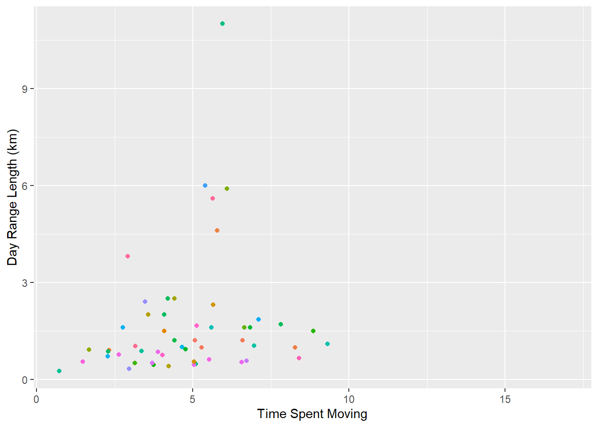

1 + 1[1] 2Quarto enables you to weave together content and executable code into a finished document. To learn more about Quarto see https://quarto.org.
When you click the Render button a document will be generated that includes both content and the output of embedded code. You can embed code like this:
1 + 1[1] 2You can add options to executable code like this
[1] 4The echo: false option disables the printing of code (only output is displayed).
library(tidyverse)Warning: package 'tidyverse' was built under R version 4.4.2── Attaching core tidyverse packages ──────────────────────── tidyverse 2.0.0 ──
✔ dplyr 1.1.4 ✔ readr 2.1.5
✔ forcats 1.0.0 ✔ stringr 1.5.1
✔ ggplot2 3.5.1 ✔ tibble 3.2.1
✔ lubridate 1.9.3 ✔ tidyr 1.3.1
✔ purrr 1.0.2
── Conflicts ────────────────────────────────────────── tidyverse_conflicts() ──
✖ dplyr::filter() masks stats::filter()
✖ dplyr::lag() masks stats::lag()
ℹ Use the conflicted package (<http://conflicted.r-lib.org/>) to force all conflicts to become errorslibrary(dplyr)
library(readr)The dataset has been loaded in as “d”
d <- "https://raw.githubusercontent.com/difiore/ada-datasets/main/data-wrangling.csv"data <- read_csv(d, col_names = TRUE)Rows: 213 Columns: 23
── Column specification ────────────────────────────────────────────────────────
Delimiter: ","
chr (6): Scientific_Name, Family, Genus, Species, Leaves, Fauna
dbl (17): Brain_Size_Species_Mean, Body_mass_male_mean, Body_mass_female_mea...
ℹ Use `spec()` to retrieve the full column specification for this data.
ℹ Specify the column types or set `show_col_types = FALSE` to quiet this message.names(data) [1] "Scientific_Name" "Family"
[3] "Genus" "Species"
[5] "Brain_Size_Species_Mean" "Body_mass_male_mean"
[7] "Body_mass_female_mean" "MeanGroupSize"
[9] "AdultMales" "AdultFemale"
[11] "GR_MidRangeLat_dd" "Precip_Mean_mm"
[13] "Temp_Mean_degC" "HomeRange_km2"
[15] "DayLength_km" "Fruit"
[17] "Leaves" "Fauna"
[19] "Canine_Dimorphism" "Feed"
[21] "Move" "Rest"
[23] "Social" Create a new variable for body size dimorphism
data$BSD <- data$Body_mass_male_mean/data$Body_mass_female_meanTaking a look at that data
head(data$BSD)[1] 1.927673 1.095238 1.317029 1.538915 1.274725 1.336449The same flow will be used for creating variables for sex ratio, comprising the number of adult females to adult males…
data$sex_ratio <- data$AdultFemale/ data$AdultMales…And for creating a variable representing defensibly index (ratio of day range length to diameter of home range
HRdiameter <- 2 * sqrt(data$HomeRange_km2/pi)
data$DI <- data$DayLength_km/ HRdiameterPlot the relationship between day range length (y axis) and time spent moving (x axis), for these primate species overall
Time spent moving is logged as a percent of time, so to get a better sense of the relationship I’m going to transform the “move” variable
time_moving <- (data$Move / 100) * 24library(ggplot2)
overall <- ggplot(data = data, aes(x = time_moving, y = DayLength_km,
color = factor(Species)))
overall <- overall + xlab("Time Spent Moving") + ylab("Day Range Length (km)")
overall <- overall + geom_point(na.rm = TRUE)
overall <- overall + theme(legend.position = "none", legend.title = element_blank())
overall
Now, using facet_wrap, create plots per family
By_Family <- overall + facet_wrap(~Family, ncol = 5)
By_Family <- By_Family + theme(legend.position = "none")
By_FamilyFrom this visual, species that spend more time moving typically do move farther, though this does not appear to be true in the family Atelidae
Now I will evaluate those dynamics according to day length and group size
overall_Dayrange_groupsize <- ggplot(data = data, aes(x = data$MeanGroupSize, y = DayLength_km,
color = factor(Species)))
overall_DR_GS <- overall_Dayrange_groupsize + xlab("Mean Group Size") + ylab("Day Range Length (km)")
overall_DR_GS <- overall_DR_GS + geom_point(na.rm = TRUE)
overall_DR_GS <- overall_DR_GS + theme(legend.position = "none", legend.title = element_blank())
overall_DR_GSNow we will look at that by Family
DRGS_byfamily <- overall_DR_GS + facet_wrap(~Family, ncol = 5)
DRGS_byfamily <- DRGS_byfamily + theme(legend.position = "none")
DRGS_byfamily
It appears that, with few exceptions, the species that live in larger groups tend to travel farther. This seems to be especially true in the Cercopithecidae family, and in the Pitheciidae family. I did not elect to transform the variables here.
Now plotting canine size dimorphism against body size dimorphism for the overall dataset….
overall_dimorphism <- ggplot(data = data, aes(x = data$Canine_Dimorphism, y = data$BSD,
color = factor(Species)))
overall_dimorphism <- overall_Dayrange_groupsize + xlab("Canine Dimorphism") + ylab("Body Size Dimorphism")
overall_dimorphism <- overall_dimorphism + geom_point(na.rm = TRUE)
overall_dimorphism <- overall_dimorphism + theme(legend.position = "none", legend.title = element_blank())
overall_dimorphism
Now plotting by family….
dimorphism_by_Family <- overall_dimorphism + facet_wrap(~Family, nrow = 5)
dimorphism_by_Family <- dimorphism_by_Family + theme(legend.position = "none")
dimorphism_by_FamilyIt would appear that species in the family Hominidae have higher canine dimorphism despite lower body size dimorphism, though Cercopithecidae shows a trend of increased body dimorphism relating to higher canine dimorphism.
Creating a diet strategy variable.
data <- data %>%
mutate(diet_strategy = case_when(
Fruit > 50 ~ "frugivore",
Leaves > 50 ~ "folivore",
!is.na(Fruit) & !is.na(Leaves) ~ "omnivore",
TRUE ~ NA_character_
))data$diet_strategy [1] NA NA "frugivore" "folivore" "folivore" "folivore"
[7] "omnivore" "omnivore" "omnivore" NA NA NA
[13] "frugivore" "omnivore" NA NA "frugivore" NA
[19] "frugivore" "frugivore" NA NA "folivore" "frugivore"
[25] "omnivore" "omnivore" NA NA "frugivore" "frugivore"
[31] "frugivore" "omnivore" NA NA NA "frugivore"
[37] "omnivore" NA NA NA "omnivore" "frugivore"
[43] "folivore" "folivore" NA "frugivore" "frugivore" NA
[49] "frugivore" NA "frugivore" "folivore" "frugivore" "frugivore"
[55] NA NA "omnivore" "frugivore" NA "frugivore"
[61] "frugivore" "omnivore" "frugivore" "frugivore" NA NA
[67] NA NA "folivore" "omnivore" NA NA
[73] "folivore" "folivore" "folivore" "frugivore" NA NA
[79] "omnivore" "frugivore" NA "frugivore" "frugivore" "frugivore"
[85] "frugivore" "frugivore" "frugivore" "frugivore" "frugivore" NA
[91] NA NA NA "omnivore" NA NA
[97] "folivore" NA NA NA NA "frugivore"
[103] "frugivore" "frugivore" "frugivore" "frugivore" "frugivore" "folivore"
[109] "frugivore" "frugivore" NA NA NA NA
[115] NA NA NA NA NA "frugivore"
[121] NA NA NA NA NA "frugivore"
[127] "frugivore" "omnivore" NA "folivore" "frugivore" NA
[133] NA NA NA "frugivore" "omnivore" NA
[139] NA NA "frugivore" NA NA "omnivore"
[145] NA "folivore" "folivore" NA "folivore" NA
[151] "frugivore" NA NA NA NA "frugivore"
[157] "omnivore" "frugivore" "frugivore" NA "frugivore" NA
[163] "omnivore" "folivore" "folivore" "folivore" NA NA
[169] "folivore" NA "frugivore" "folivore" NA "folivore"
[175] NA NA "omnivore" "omnivore" "omnivore" "folivore"
[181] "folivore" "frugivore" "folivore" NA NA "frugivore"
[187] NA NA NA NA NA NA
[193] NA NA NA NA "omnivore" "frugivore"
[199] "omnivore" NA NA NA "folivore" "omnivore"
[205] "folivore" NA "folivore" "folivore" "omnivore" "folivore"
[211] "folivore" "frugivore" "frugivore"dietary_strategy <- ggplot(data[!is.na(data$diet_strategy), ], aes(x = diet_strategy, y = MeanGroupSize)) +
geom_boxplot() +
labs(title = "Dietary Strategy",
x = "Dietary Strategy",
y = "Group Size")dietary_strategyWarning: Removed 19 rows containing non-finite outside the scale range
(`stat_boxplot()`).
Final challenge, running one code chunk to create a column with binomial nomenclature, trimming the dataset to only include binomial, family, brain size, and body mass; grouping variables by family and calculating average value of brain size and body mass by family.
d <- data %>%
mutate(Binomial = paste(Genus, Species)) %>%
select(Binomial, Family, Brain_Size_Species_Mean, Body_mass_male_mean) %>%
group_by(Family) %>%
summarise(
avg_brain_size = mean(Brain_Size_Species_Mean, na.rm = TRUE),
avg_body_mass = mean(Body_mass_male_mean, na.rm = TRUE)
) %>%
arrange(avg_brain_size)print(d)# A tibble: 14 × 3
Family avg_brain_size avg_body_mass
<chr> <dbl> <dbl>
1 Tarsiidae 3.26 131
2 Cheirogalidae 4.04 193.
3 Galagidae 5.96 395.
4 Lepilemuridae 7.27 792
5 Lorisidae 8.67 512.
6 Lemuridae 23.1 2077.
7 Cebidae 23.9 1012.
8 Indriidae 27.3 3638.
9 Daubentonidae 44.8 2620
10 Pitheciidae 56.3 1955.
11 Atelidae 80.6 7895.
12 Cercopithecidae 85.4 9543.
13 Hylobatidae 101. 6926.
14 Hominidae 410. 98681.